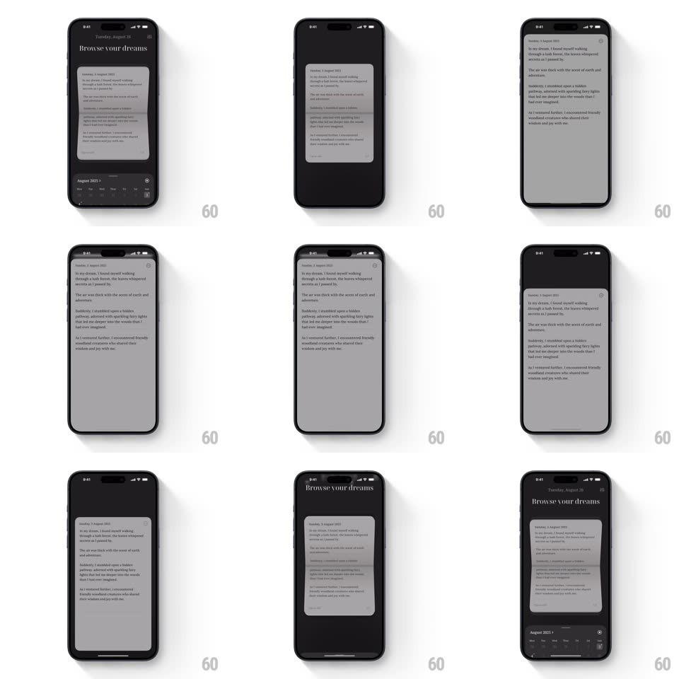

Media
Frame-by-frame

Rebuild this interaction 1:1: Yume's journal card - tapping a dream card scales it up to a full-screen page, and dismissing scales it down with a 3D tilt as it slides back into the list.

Rebuild this interaction 1:1: Yume's journal card - tapping a dream card scales it up to a full-screen page, and dismissing scales it down with a 3D tilt as it slides back into the list. ## Integration Integration: stack-agnostic spec - springs given as stiffness/damping, timed motions as duration + curve; map every value to your framework and animation library of choice. ## Scene Dark journal app "Browse your dreams": a list card (date, dream excerpt) over a month strip; open state is a full-screen paper page with the dream text; dismiss returns the card to its list position. ## Motion spec Pattern: card-to-page morph with 3D dismiss, ~450ms each way. - Open: the card scales from list size to full screen (spring ~280/26, 400ms), its corners expanding to the screen edges; the month strip and header fade (200ms) as the page content fades in staggered (150ms, +50ms per block). - Dismiss: the page tilts in 3D (rotateX ~12deg, perspective 1000px), scales down (spring ~320/24, 450ms) and slides toward its list slot while the list fades back in (200ms). - The card lands exactly in its scroll position - no snap or jump. ## Calibration - One continuous transform from card rect to screen rect - no crossfade between two views. - The 3D tilt is strongest mid-flight and zero at both ends. ## Reduced motion Simple scale and fade, no 3D tilt. ## Don't miss - The dismiss carries a paper-like tilt - it is not a flat shrink. - Header and month strip crossfade with the card, not before it.